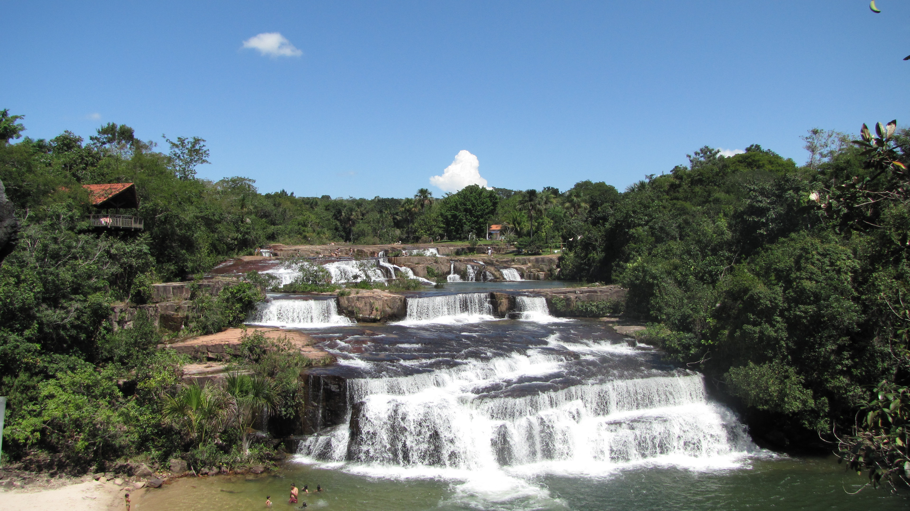
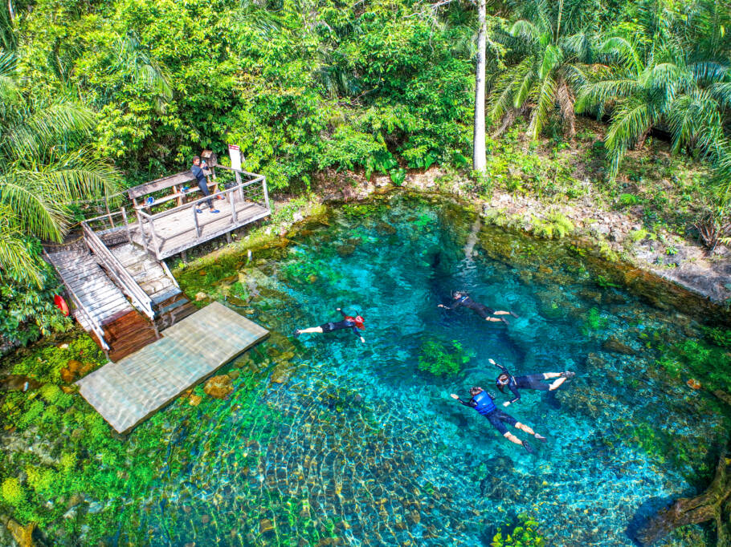
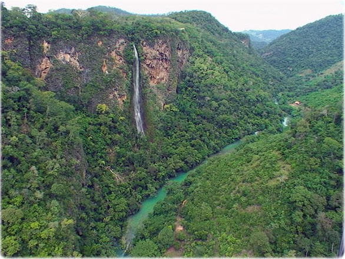
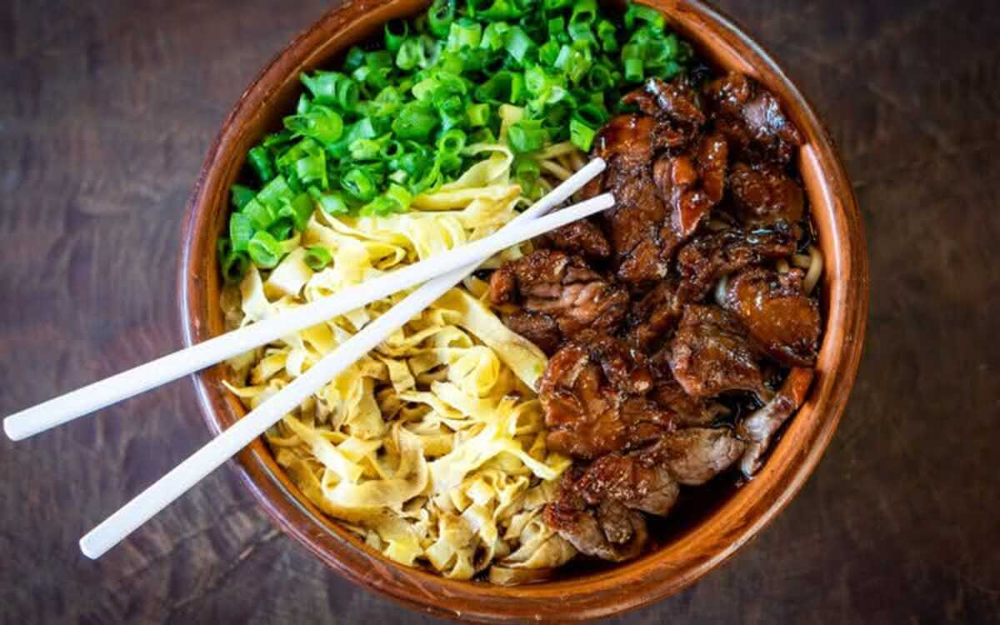
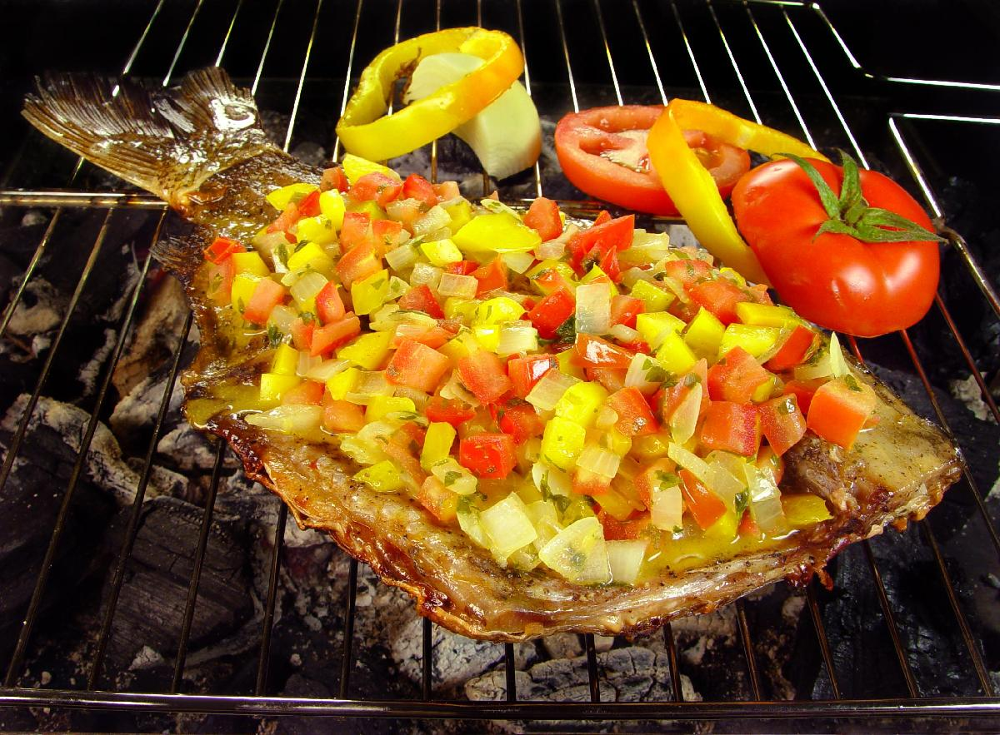
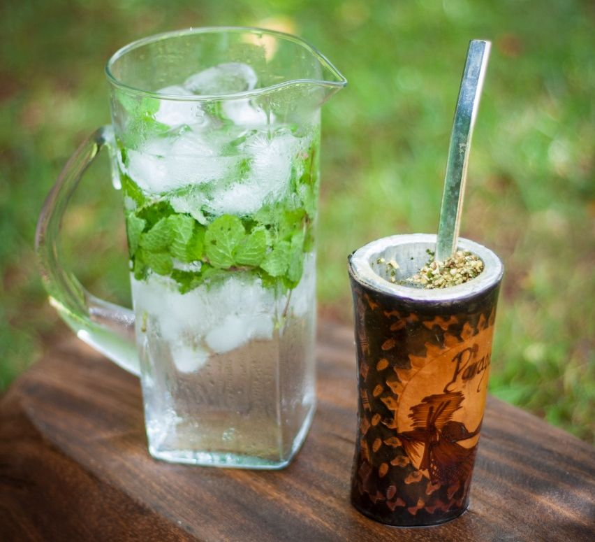
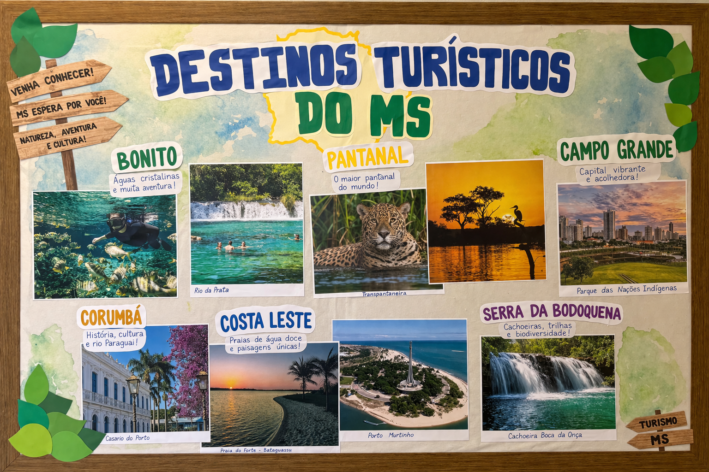

Bem-vindo ao Site
Explore as melhores opções abaixo.



Gastronomia Local
Sabores únicos que você só encontra aqui.



Descubra o Mato Grosso do Sul
O Mato Grosso do Sul é um estado rico em biodiversidade e cultura. Conhecido mundialmente pelo Pantanal e pelas águas cristalinas de Bonito, o estado oferece uma experiência única de contato com a natureza.
Além do ecoturismo, nossa capital, Campo Grande, é famosa por sua gastronomia influenciada por diversas culturas, como a paraguaia e a japonesa, além de ser um importante centro econômico da região centro-oeste.
